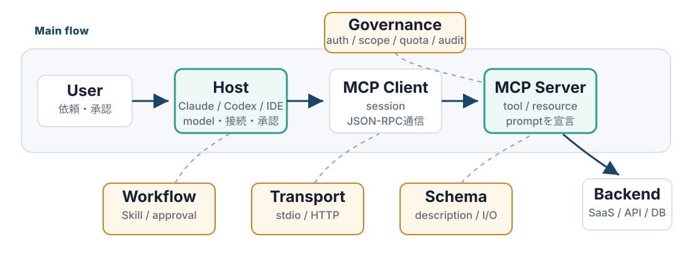
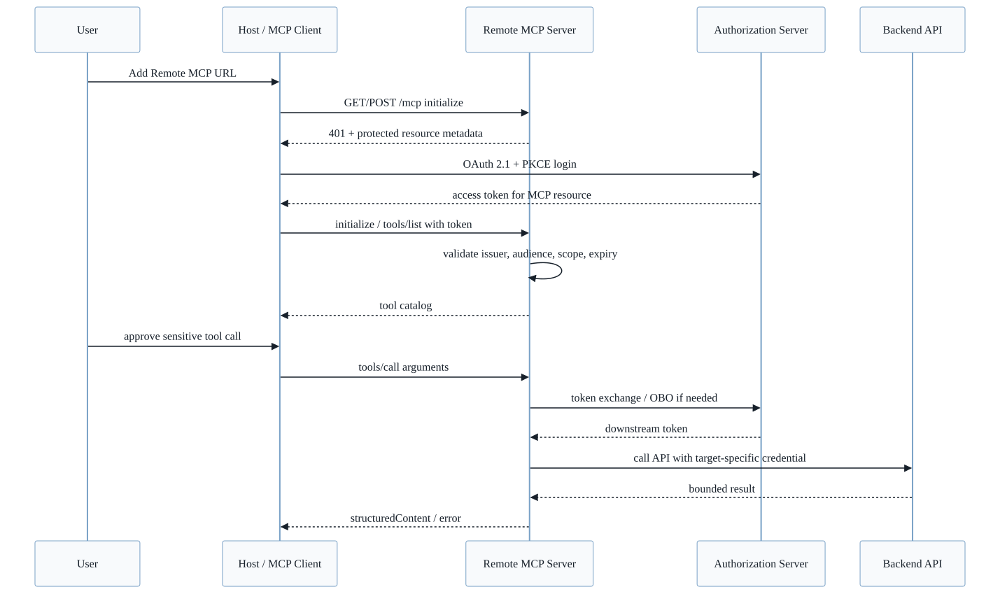

slides
MCPを開発現場でどう使うべきか
社内発表向けMCP解説、要所のQ&A、JSON-RPC payload、CLI/ブラウザ比較、MCPサーバー構築、Remote MCP、開発向けMCP調査
MCPを開発現場でどう使うべきか
AI Agentが外部systemを安全に使うための接続面を、概念地図から順に理解する。
2026-06-09
00 / 全体像
MCPの全体地図

この図は暗記用ではない。まずは User -> Host -> MCP Server -> Backend の左から右の流れだけ見る。
この発表のゴールは、周辺のピースを順番に埋めていくこと。
00 / 全体像
まず一文でいうと
MCPは、ClaudeやCodexのようなAIアプリが、GitHubや社内DBのような外部システムを安全に使うための共通ルール。
正式に言うと、AI applicationが外部システムのdata / action / workflowへ接続するための標準protocol。
- Hostがuser、model、接続、承認を束ねる
- MCP ClientがserverごとのsessionとJSON-RPC通信を持つ
- MCP Serverがtool / resource / promptを宣言する
- Backendは既存API、SaaS、DB、社内systemのまま活かす
つまりMCPは、LLMが外部世界へ出るときの接続契約。
00 / 全体像
今日の結論
MCPは「便利な拡張」ではなく、AI Agentに外部systemを使わせるための接続設計。
- 外部操作: UI推測ではなく、tool/resource/schemaで宣言する
- 安全性: auth、scope、approval、audit、trusted serverを前提にする
- 定型化: SkillにMCPの使い方を入れると反復業務が型になる
- 制限: quota、rate limit、tool数、result sizeも設計対象になる
この4点を軸に、既存API・開発tool・業務SaaSをAIが迷わず呼べる入口として見直す。
00 / 全体像
例: 失敗CIを調べる
この発表では、同じ例でMCPの意味を追う。
User:
PR #123のCIが落ちている。原因を調べて、修正方針を出して。
AI Agent:
1. GitHubのPR状態を読む
2. 失敗したcheck runを特定する
3. 失敗ログを必要な範囲だけ読む
4. repositoryの該当箇所を調べる
5. 修正案と検証コマンドを返すMCPがあると、GitHubやcodebaseを「画面推測」ではなく、定義済みtoolとして扱える。
00 / 全体像
本日の流れ
| 順番 | 埋めるピース | ここでわかること |
|---|---|---|
| 1 | Host / Client / Server | 誰が接続と承認を持つか |
| 2 | Tool / Resource / Prompt | MCP serverが何を公開するか |
| 3 | CLI / Browser / APIとの比較 | いつMCPを選ぶべきか |
| 4 | MCP server構築 | 既存APIをどうadapter化するか |
| 5 | Remote / Protocol / Auth | どう通信し、どう守るか |
| 6 | Gateway / Workflow | チームでどう運用するか |
| 7 | Governance | 何を信頼し、何を制限するか |
3つの問いに分けると追いやすい。誰がつなぐか、何を公開するか、どう安全に運用するか。
Chapter 01
基本概念
MCPを構成する言葉と責務を揃える
出典: MCP spec; Anthropic MCP launch; 調査メモ
01 / 基本概念
まず押さえる用語
| 用語 | 何を指すか | この発表での見方 |
|---|---|---|
| Agent | LLMが手順を考え、toolを選び、結果を見て次へ進む実行主体 | 判断し、toolを選ぶ側 |
| Host | Claude / Cursor / VS Codeなどの実行環境 | MCP接続と承認を管理する側 |
| MCP Client | Host内でserverと通信する部品 | JSON-RPCを送受信する側 |
| MCP Server | 外部機能をtool/resourceとして公開する部品 | 既存APIをagent向けに整える側 |
最初に分けるべきは「賢いmodel」ではなく、modelを囲む実行境界。
出典: MCP spec; Anthropic MCP launch; 調査メモ
01 / 基本概念
MCPとは？
Model Context Protocol。AI agentが外部のdata / action / workflowを使うための標準protocol。
- 何を公開するか: tool、resource、prompt
- どう説明するか: name、description、input schema、output schema
- どう運ぶか: stdio、Streamable HTTPなどのtransport
- どう守るか: auth、scope、approval、audit、rate limit
MCPは「LLMを賢くする技術」ではなく、LLMが安全に外部世界へ出るための接続契約。
 Model Context Protocol
agentが外部systemを扱うための共通I/O
Model Context Protocol
agentが外部systemを扱うための共通I/O
出典: MCP spec; Anthropic MCP launch; 調査メモ
01 / 基本概念
Host / Client / Serverとは？

- Host: user、model、tool承認、接続設定をまとめる
- Client: MCP protocolを話す通信部品
- Server: agent向けに機能を宣言して実行する
- Backend: 既存のSaaS、API、DB、社内system
MCP serverはbackendそのものではなく、agent向けadapterとして設計する。
 HostClaude / Desktop / Code
HostClaude / Desktop / Code IDE HostCursorなどの開発環境Clientprotocol通信の境界
IDE HostCursorなどの開発環境Clientprotocol通信の境界 Server / BackendGitHub、SaaS、社内API
Server / BackendGitHub、SaaS、社内API出典: MCP spec; Anthropic MCP launch; 調査メモ
01 / 基本概念
Tool / Resource / Promptとは？
| 種類 | 役割 | 例 |
|---|---|---|
| Tool | agentが実行できるaction | search_items, create_issue, deploy_stack |
| Resource | agentが読めるcontext/data | file、log、ticket、schema、document |
| Prompt | 再利用できる作業template | incident調査手順、PR review手順 |
開発で最初に使うのは多くの場合tool。
ただし良いMCP serverは、actionだけでなく判断材料となるresourceも一緒に設計する。
ここでのPromptは「userが入力するprompt」ではなく、serverが公開する再利用template。
出典: MCP spec; Anthropic MCP launch; 調査メモ
01 / 基本概念
Protocol / Transportとは？
- Protocol: どんなmessageを、どんな順序でやり取りするか
- Transport: そのmessageをどう運ぶか
- JSON-RPC: MCP messageの基本的なenvelope
- Auth: 誰が、どのscopeで、どのserver/toolを使えるか
MCP protocol message
initialize -> tools/list -> tools/call
Transport
stdio: local processのstdin/stdout
Streamable HTTP: remote endpoint over HTTPS後半のJSON-RPCやRemote MCPは、この用語の上に乗る。
郵便で言えば、protocolは封筒の書式と手続き、transportは郵便・宅配・手渡しのような運び方。
出典: MCP spec; Anthropic MCP launch; 調査メモ
01 / 基本概念
MCPの1回の呼び出し
1. HostがMCP serverへ接続する
2. Hostがtools/listで使えるtoolとschemaを受け取る
3. LLMがuser依頼とtool定義を見てtool callを提案する
4. Hostが必要ならuser承認を取り、tools/callを送る
5. MCP serverがbackendを呼び、structured resultを返すポイントは、LLMが勝手に外部APIを叩くのではなく、Hostが接続・承認・実行を仲介すること。
出典: MCP spec; MCP lifecycle; MCP tools; 調査メモ
01 / 基本概念
SkillsとMCPの違い
Skillは「どう進めるか」を持つ。MCPは「何を読める/実行できるか」を持つ。
| 判断軸 | Agent Skill | MCP server |
|---|---|---|
| 主目的 | workflow、判断、検証、出力形式を固定する | 外部systemのdata/actionをAIが呼べる形で公開する |
| 契約 | Markdown手順、references、必要ならscript | tool/resource/prompt schema、transport、auth |
| 権限境界 | hostの作業環境やsecret運用に寄る | server/gateway側でscope、approval、auditを置ける |
| 向く処理 | repo固有手順、local build/test、変換、検証 | SaaS、DB、社内API、共有connector、権限付きwrite |
結論: Skill = how to proceed / MCP = what to access or execute。
出典: Agent Skills spec; OpenAI Codex Skills; MCP spec; 調査メモ
Chapter 02
比較と判断軸
CLI、Browser、API、MCPを使い分ける
出典: Anthropic advanced tool use; MCP tools; 調査メモ
02 / 比較と判断軸
なぜMCPが必要なのか
AIエージェントが外部システムを安全に使うための標準インターフェースを作る。
- 外部システム: GitHub、AWS、Sentry、DB、社内API、ブラウザ、Docs
- できること: context取得、tool実行、workflowの再利用
- 重要点: tool名、description、schema、auth、transport、approvalをプロトコルで扱う
MCPは「AIに便利ツールを足す」ではなく、AIが迷わず呼べるAPI境界。
出典: Anthropic advanced tool use; MCP tools; 調査メモ
02 / 比較と判断軸
CLI / Browser / MCPの違い
| 方式 | agentが見るもの | 強い場面 | 弱い場面 |
|---|---|---|---|
| CLI | command + stdout/stderr | local test、build、git、devops | flags/env/output量に依存 |
| Browser | UI、DOM、screenshot、DevTools | visual QA、live UI、session依存 | layout/selector/loadingに依存 |
| MCP | tool/resource schema + structured result | repeatableなAPI/data/action | server設計と運用が必要 |
判断軸は「人間向けインターフェースか、agent向け契約か」。
出典: Anthropic advanced tool use; MCP tools; 調査メモ
02 / 比較と判断軸
Q. CLIで叩けばよくない？
A. CLIは今でも強い。ただしagentには余計な推測と出力が多い。
- command syntax、flags、profile、region、envをagentが推測する
- stdout/stderrは人間向けで、ログやstack traceが巨大になりやすい
- エラー原因の切り分けに追加commandが増える
- 出力を絞るには
jq、grep、--jsonなどを毎回設計する必要がある
CLIはlocal executionに最適。外部サービスの反復操作はMCPの方が安定しやすい。
出典: Anthropic advanced tool use; MCP tools; 調査メモ
02 / 比較と判断軸
Q. ブラウザ操作で十分では？
A. UIそのものを見るなら必須。データ取得や操作の主経路にすると不安定。
- page遷移、modal、loading、viewport、selector変更に弱い
- screenshotやaccessibility treeはcontextを消費しやすい
- UIから意図を推測するため、操作ミスや待機ミスが起きやすい
- ただしvisual QA、console/network、performance、実ブラウザ再現には強い
ブラウザ操作は「UIの検証」、MCPは「宣言された機能の実行」と分ける。
出典: Anthropic advanced tool use; MCP tools; 調査メモ
02 / 比較と判断軸
Token使用量の比較イメージ
- 上3つは同一タスクを行うときの代表レンジ。client/model/result設計で変わる。
- 最下段はAnthropic公開例: 5 MCP servers / 58 toolsでrequest前に約55K tokens。
- 重要なのは「MCPなら常に少ない」ではなく、tool surfaceを絞る、検索する、結果をboundedにすること。
出典: Anthropic advanced tool use; MCP tools; 調査メモ
02 / 比較と判断軸
MCPがフローを安定させる理由
agentが低レベル操作を推測せず、宣言済みcapabilityを呼べるから。
tools/list: 何ができるかを発見するinputSchema: 必要な引数と型がわかるdescription: いつ使うべきか、制約は何かがわかるstructuredContent: 返り値を機械的に扱える- host UI: sensitive tool callを承認フローに載せられる
「画面を見て推測」や「CLI flagsを思い出す」から「定義済みtoolを呼ぶ」へ移る。
出典: Anthropic advanced tool use; MCP tools; 調査メモ
02 / 比較と判断軸
CI調査で見る利用フロー
CLI:
gh pr view --json statusCheckRollup
gh run list --branch <branch>
gh run view <run-id> --log-failed
grep / jq / sedで絞り込み
Browser:
PR pageを開く -> Checksを探す -> failing checkを開く
log UIで検索 -> tabや表示状態を調整
MCP:
github.get_pull_request(number)
github.list_check_runs(ref)
github.get_failed_check_log(run_id, max_lines=200)MCPの価値は、サービス側が「agentに必要な粒度」でtoolを切れること。
02 / 比較と判断軸
Q. MCPが向かない場面は？
- local build/test、package scripts、任意shell調査
- UIの見た目、layout、accessibility、performance確認
- 一度だけのadhoc作業でserver化する価値が薄いもの
- 信頼できるMCP serverがないサービス
- 広すぎる権限や雑なdescriptionで、agent-safeではないserver
MCPは万能ではない。反復的なservice/data/action境界を標準化するもの。
出典: Anthropic advanced tool use; MCP tools; 調査メモ
02 / 比較と判断軸
提供者から見たMCP
| 提供面 | 主な利用者 | agent適性 | provider control |
|---|---|---|---|
| Browser UI | 人間 | 低-中 | 見た目は制御、machine契約は弱い |
| CLI | 開発者/運用者 | 中 | 出力・権限が広がりやすい |
| REST/OpenAPI | アプリ | 中-高 | 契約は強いがagent用説明が不足しがち |
| MCP | AI client/agent | 高 | scope、audit、consent、output capを設計できる |
提供者視点では、MCPは AI向けの安全な入口 を作る選択肢。
出典: Anthropic advanced tool use; MCP tools; 調査メモ
Chapter 03
MCP server構築
既存APIをagent向けadapterにする
出典: MCP tools; FastMCP; FastAPI OpenAPI; 調査メモ
03 / MCP server構築
既存APIをMCP化する基本設計
API本体を書き換えず、adapter layerを追加する。
app/
api/
main.py # existing FastAPI app
routers/
inventory.py # operation_id, tags, response_model
domain/
inventory_service.py # business logic
mcp/
server.py # MCP adapter
route_policy.py # expose / exclude policy
descriptions.py # model-facing descriptionsOpenAPIを契約として使い、MCPでは公開面を絞る。
 FastAPI既存APIMCPagent向け公開面
FastAPI既存APIMCPagent向け公開面出典: MCP tools; FastMCP; FastAPI OpenAPI; 調査メモ
03 / MCP server構築
既存APIをMCP化する流れ

既存APIをsource of truthにし、MCP serverは公開範囲、description、schema、出力制限を担うadapterにする。
出典: MCP tools; FastMCP; FastAPI OpenAPI; 調査メモ
03 / MCP server構築
避けたいMCP server設計
MCP化は「既存APIを全部toolにする」ことではない。
| 避けたい設計 | なぜ危ないか | 良い設計 |
|---|---|---|
call_api(method, path, body) | agentがpath、method、payload、権限を推測する | 業務目的ごとのtoolへ分ける |
| admin/debug/internal endpointも公開 | modelから見える攻撃面と誤操作が増える | allowlist + route policyで絞る |
| raw log / full JSONを返す | contextが増え、次の判断がぶれる | summary + stable ID + pagination |
| read/writeが同じtool | 参照のつもりで副作用が起きる | search -> read detail -> actに分ける |
| descriptionがAPI docsのまま | いつ使うべきか、危険性、返り値が伝わらない | 条件、制約、副作用、失敗時の扱いを書く |
良いMCP serverはtool数が多いserverではなく、agentが迷わず安全に次の一手へ進めるserver。
出典: Anthropic advanced tool use; MCP tools; MCP resources; 調査メモ
03 / MCP server構築
FastAPI + OpenAPIの実装例: 契約とclient
# app/mcp/server.py
import httpx
from app.api.main import app as fastapi_app # OpenAPI契約だけ再利用
from app.config import settings
openapi_spec = fastapi_app.openapi() # paths/schemas/operation_idのsource of truth
# 既存APIをHTTPで呼び、auth/middleware/log/validationを保つ。
api_client = httpx.AsyncClient(
base_url="http://127.0.0.1:9000",
timeout=30.0,
headers={"Authorization": f"Bearer {settings.api_token}"},
)handlerを直接importせず、既存APIの境界を保つ。
出典: Anthropic advanced tool use; MCP tools; 調査メモ
03 / MCP server構築
FastMCPでtool/resourceとして公開する
from fastmcp import FastMCP
from app.mcp.route_policy import route_map_fn # 公開範囲のpolicy
# 前ページで作ったapi_client / openapi_specを渡す。
# policyを通ったendpointだけをMCP tool/resourceとして公開する。
mcp = FastMCP.from_openapi(
openapi_spec=openapi_spec,
client=api_client,
name="Inventory MCP",
route_map_fn=route_map_fn,
)出典: MCP tools; FastMCP; FastAPI OpenAPI; 調査メモ
03 / MCP server構築
Q. OpenAPIをそのまま出してよい？
A. 原則は出し過ぎない。route policyでagent-safeな面だけ公開する。
from fastmcp.server.providers.openapi import MCPType
from fastmcp.utilities.openapi import HTTPRoute
BLOCKED_TAGS = {"internal", "admin", "debug"}
WRITE_METHODS = {"POST", "PUT", "PATCH", "DELETE"}
def route_map_fn(route: HTTPRoute, default_type: MCPType) -> MCPType | None:
# まずtag/pathで内部用途のendpointを除外する。
if set(route.tags or []).intersection(BLOCKED_TAGS):
return MCPType.EXCLUDE
if route.path.startswith(("/admin", "/debug", "/internal")):
return MCPType.EXCLUDE
# side effectのある操作はtoolにする。承認・監査の対象にしやすい。
if route.method in WRITE_METHODS:
return MCPType.TOOL
# 参照専用のcatalogはresource templateとして文脈提供に使える。
if route.method == "GET" and "catalog" in (route.tags or []):
return MCPType.RESOURCE_TEMPLATE
# 本番ではallowlist化し、意図しない新規endpoint公開を防ぐ。
return MCPType.TOOL出典: MCP tools; FastMCP; FastAPI OpenAPI; 調査メモ
03 / MCP server構築
Q. descriptionは何を書くべき？
A. agentが誤用しないための実行契約を書く。
- 何をするtoolか
- いつ使うべきか、いつ使うべきでないか
- 副作用があるか
- 実行前にユーザー確認が必要か
- 必須引数の意味、IDの取得元
- 返り値の見方、失敗時の次アクション
良いdescriptionは説明文ではなく、agentの行動制約。
出典: MCP tools; FastMCP; FastAPI OpenAPI; 調査メモ
03 / MCP server構築
Q. 良いdescriptionの例は？
@router.post(
"/{item_id}/reserve",
# operation_idはtool名の元になる。自動生成名に任せない。
operation_id="reserve_inventory_item",
summary="Reserve inventory for an item",
# 副作用と事前確認条件を先頭に置く。modelが誤用しにくくなる。
description=(
"Reserve stock for a known inventory item. "
"This changes inventory state. Call only after the user "
"explicitly confirms item_id, quantity, and expiration time. "
"Use search_inventory_items first if item_id is unknown."
),
# structured outputにして、後続tool callやUI表示で扱いやすくする。
response_model=ReserveResponse,
)
async def reserve_inventory_item(
# IDが不明ならsearch toolで取得させ、ユーザー入力の曖昧さを減らす。
item_id: str,
request: ReserveRequest,
) -> ReserveResponse:
...critical ruleは先頭に置く。長すぎる説明はclient側で切られる可能性がある。
出典: MCP tools; FastMCP; FastAPI OpenAPI; 調査メモ
Chapter 04
Remote MCPと複数Agent設定
Claude接続、project/user/org設定を整理する
出典: Claude Code MCP; VS Code MCP; Cursor MCP; Microsoft APM; 調査メモ
04 / Remote MCPと複数Agent設定
ClaudeへRemote MCPを接続する全体像
Remote MCPはcloud/service側で動くMCP serverをClaude Codeなどから使う形。
# OAuth/DCR対応serverならURLだけで登録できる。
claude mcp add --transport http inventory https://mcp.example.com/mcp
# bearer token運用ではheaderを明示する。
claude mcp add --transport http inventory https://mcp.example.com/mcp \
--header "Authorization: Bearer $INVENTORY_MCP_TOKEN"
# /mcpで認証状態、list/getで登録内容を確認する。
/mcp
claude mcp list
claude mcp get inventoryproductionではHTTPS、OAuth/token validation、rate limit、audit logを前提にする。
出典: Claude Code MCP; VS Code MCP; Cursor MCP; Microsoft APM; 調査メモ
04 / Remote MCPと複数Agent設定
OAuth付きRemote MCPで起きること
OAuthは「AIアプリにpasswordを渡さず、必要なscopeのtokenだけ渡す」ための仕組み。
1. HostがRemote MCP serverへ接続する
2. Serverが「この認可serverでloginして」と返す
3. Userがbrowserで同意する
4. Hostはtokenを得て、MCP serverへ再接続する
5. MCP serverはscopeとtokenの宛先を検証してtoolを実行する覚える点はコマンドではなく、誰の権限で、どのserverに、どの範囲で入るか。
出典: Claude Code MCP; VS Code MCP; Cursor MCP; Microsoft APM; 調査メモ
04 / Remote MCPと複数Agent設定
複数Agentで使う設定設計
設定を1つのJSONとして考えない。共有する能力と個人の認証を分ける。
| layer | 置くもの | 例 |
|---|---|---|
| project | teamで使うserver定義、URL、version、tool allowlist | .mcp.json, .vscode/mcp.json, .cursor/mcp.json |
| user | 個人token、OAuth login、local path、個人tool | ~/.claude.json, user profile mcp.json, ~/.cursor/mcp.json |
| org | approved server、allow/deny、audit、sandbox | managed-mcp.json, enterprise policy, Gateway/APIM |
共有serviceはRemote MCP。local file/Git/browserなど手元依存はstdio。
出典: Claude Code MCP; VS Code MCP; Cursor MCP; Microsoft APM; 調査メモ
04 / Remote MCPと複数Agent設定
Q. clientごとの設定形式は同じ？
同じではない。ここが複数Agent運用の落とし穴。
| client | project config | user config | key |
|---|---|---|---|
| Claude Code | .mcp.json | ~/.claude.json | mcpServers |
| VS Code / Copilot | .vscode/mcp.json | user profile mcp.json | servers |
| Cursor | .cursor/mcp.json | ~/.cursor/mcp.json | mcpServers |
| Codex CLI | .codex/config.toml | ~/.codex/config.toml | [mcp_servers.*] |
| Claude.ai | connector settings | user OAuth | connector |
同名serverの上書き・precedenceもclientごとに確認する。
出典: Anthropic advanced tool use; MCP tools; 調査メモ
Chapter 05
Protocol / Auth / JSON-RPC
接続フローとtool callの中身を見る
出典: MCP spec; MCP authorization; JSON-RPC 2.0; OAuth 2.1; OpenAI function calling; 調査メモ
05 / Protocol / Auth / JSON-RPC
接続protocolの選び方
| transport | 向く用途 | 接続フロー |
|---|---|---|
| stdio | local filesystem、git、script、developer-only tool | hostがserver process起動 -> stdin/stdoutでJSON-RPC |
| Streamable HTTP | remote service、team共有、SaaS、社内API | clientがHTTPS endpointへPOST/GET -> session/authで継続 |
| HTTP+SSE | 旧remote互換 | 新規では避け、HTTPへ移行 |
| WebSocket/custom | push-heavy、特殊要件 | client/server対応が前提 |
MCP message自体はJSON-RPC。transportはその運び方。
出典: MCP spec; MCP authorization; JSON-RPC 2.0; OAuth 2.1; OpenAI function calling; 調査メモ
05 / Protocol / Auth / JSON-RPC
Remote MCPの接続フロー

出典: Claude Code MCP; VS Code MCP; Cursor MCP; Microsoft APM; 調査メモ
05 / Protocol / Auth / JSON-RPC
Remote MCPの実装時チェック
| step | client / server interaction | 実装上の要点 |
|---|---|---|
| 1 | client -> server: initialize | protocol version、capability negotiation |
| 2 | server -> client: InitializeResult | MCP-Session-Idを返す場合がある |
| 3 | client -> server: tools/list | tool schemaとdescriptionを取得 |
| 4 | client -> server: tools/call | session header、auth header、input validation |
| 5 | server -> backend | token/scope検証、domain API実行 |
| 6 | server -> client | structured result、error、resource link |
Streamable HTTPではsession、protocol version header、Origin validation、authが運用上の要点。
出典: Claude Code MCP; VS Code MCP; Cursor MCP; Microsoft APM; 調査メモ
05 / Protocol / Auth / JSON-RPC
Remote authで覚える3点
| 観点 | 意味 | 失敗すると |
|---|---|---|
| 誰の権限か | user / agent / service accountを区別する | agentが過剰権限で動く |
| どのscopeか | read/write、対象project、操作範囲を絞る | 予期しないwriteや漏えいが起きる |
| tokenの宛先 | tokenが使えるMCP server / backendを固定する | 別serverへのtoken再利用が起きる |
Remote MCPの難所はJSON-RPCではなく、tokenの宛先・scope・委任境界を壊さないこと。
Protected Resource Metadata、OIDC Discovery、PKCE、Dynamic Client Registrationは、この3点を実装で支える仕組み。
出典: MCP spec; MCP authorization; JSON-RPC 2.0; OAuth 2.1; OpenAI function calling; 調査メモ
05 / Protocol / Auth / JSON-RPC
JSON-RPCで流れるmessage
MCP messageはJSON-RPC 2.0 envelopeで流れる。
// 1. protocol versionとclient capabilityを交渉する。
{"jsonrpc":"2.0","id":1,"method":"initialize","params":{...}}
// 2. serverが公開するtool名・description・schemaを取得する。
{"jsonrpc":"2.0","id":2,"method":"tools/list","params":{}}
// 3. hostがLLMのtool callをMCPの実行requestへ変換する。
{"jsonrpc":"2.0","id":3,"method":"tools/call","params":{...}}method:initialize,tools/list,tools/callなどparams: methodごとの入力id: request/response対応。ない場合はnotificationresult/error: 成功応答またはprotocol error
LLMが直接APIを叩くのではなく、hostがtool callをMCP JSON-RPCへ変換する。
出典: MCP spec; MCP authorization; JSON-RPC 2.0; OAuth 2.1; OpenAI function calling; 調査メモ
05 / Protocol / Auth / JSON-RPC
tools/listが作るmodel向け文脈
{
// modelが選択する安定ID。operation_id由来にすると追跡しやすい。
"name": "inventory.search_items",
// いつ使うかを短く書く。これはmodel input tokenとして消費される。
"description": "Search inventory by keyword. Use before reserving stock when SKU is unknown.",
"inputSchema": {
"type": "object",
"properties": {
"query": {"type": "string"},
// 結果数をschemaで制限し、token増大と曖昧な結果を抑える。
"limit": {"type": "integer", "minimum": 1, "maximum": 20}
},
"required": ["query"]
}
}name: modelが選ぶtool IDdescription: いつ使うか、制約、返すものinputSchema: argumentsを生成する型情報outputSchema/structuredContent: 返り値を後続処理しやすくする
descriptionはドキュメントではなく、model input token。
出典: MCP spec; MCP authorization; JSON-RPC 2.0; OAuth 2.1; OpenAI function calling; 調査メモ
05 / Protocol / Auth / JSON-RPC
LLMはMCPを直接叩いていない

MCPはLLMの出力形式ではなく、hostがtool catalogと実行を安定して扱うための接続protocol。
出典: MCP spec; MCP authorization; JSON-RPC 2.0; OAuth 2.1; OpenAI function calling; 調査メモ
05 / Protocol / Auth / JSON-RPC
Q. tool callのテキストはどう生成される？
A. MCP serverではなく、hostがLLMへtool定義を渡し、LLMがtool_use/tool_callを生成する。
MCP server: tools/list -> tool metadata
# tool名、description、input/output schemaを返す
Host/client: providerのtools/function schemaへ変換
# Anthropic/OpenAI/Geminiなどの形式へmapする
LLM: user prompt + system prompt + tool definitionsからtool callを生成
# MCP serverではなくmodelがnameとargumentsを選ぶ
Host/client: tool callをMCP tools/callへ変換
# 実行はhostが仲介し、serverへJSON-RPCで送る
MCP server: backend APIを実行してresultを返す公開情報では、Anthropicはtool定義からspecial system promptを構築すると説明している。 OpenAI/Geminiもtool/function schemaをmodel inputとして渡し、実行はapplication側が担う。
出典: MCP spec; MCP authorization; JSON-RPC 2.0; OAuth 2.1; OpenAI function calling; 調査メモ
05 / Protocol / Auth / JSON-RPC
なぜname + argumentsを出せるのか
| レイヤー | 公開情報から見える工夫 |
|---|---|
| Prompt/context | tool definitionをmodelが読める形式で注入する |
| Training/post-training | tool call形式、schema、拒否、複数stepを学習する |
| Runtime constraints | strict schema / Structured Outputs / constrained decoding |
| Host loop | validation、approval、retry、MCP JSON-RPC変換 |
MCP固有の魔法ではなく、tool calling能力 + host adapter + protocol実装の組み合わせ。
出典: MCP spec; MCP authorization; JSON-RPC 2.0; OAuth 2.1; OpenAI function calling; 調査メモ
05 / Protocol / Auth / JSON-RPC
Q. MCP用にLLMをfine-tuningする必要がある？
A. 通常は不要。最初に直すべきものはmodelではなくtool surface。
- MCP接続に必要なのはmodel専用trainingではなく、host/client/serverのprotocol実装
- modelはtool/function calling能力で
name + argumentsを生成する - まず調整する順番: tool名 -> description -> schema -> result size -> error
- tool数が多い場合はtool search、defer loading、gateway側routingを検討する
- 公開情報にはfunction calling向けfine-tuning例があるが、MCP専用fine-tuning要件ではない
大量・類似・複雑なtoolで精度が足りない場合に、tool-use evalやfine-tuningを検討する。
出典: MCP spec; MCP authorization; JSON-RPC 2.0; OAuth 2.1; OpenAI function calling; 調査メモ
Chapter 06
AWSケーススタディ
Remote MCPをGateway/Identityで運用する
出典: AgentCore Gateway; AgentCore Identity; 調査メモ
06 / AWSケーススタディ
AWS MCP / AgentCoreの位置づけ
AWS MCP ServerはGA済みのAWS公式MCP入口として、AWS API/knowledge/architecture guidanceをagentに接続する。
- AWSサービス操作やknowledge lookupをagent workflowへ入れやすい
- IAM、region、profile、least privilegeの設計が重要
- 個人開発ではlocal config、組織ではapproved server + policyで管理する
- Agent Toolkit for AWSではskillsやMCP serverを組み合わせて開発体験を作れる
AWS系は権限が強いので、read-onlyから始め、write系は承認を必須にする。
出典: AgentCore Gateway; AgentCore Identity; 調査メモ
06 / AWSケーススタディ
AWSでRemote MCPを構築する構成
A. AgentCore GatewayをRemote MCP入口にし、既存API/Lambda/MCP serverをtargetとして束ねる。
Claude / Codex / Agent
-> AgentCore Gateway (MCP endpoint)
-> targets: OpenAPI API / Lambda / MCP server / Smithy / API Gateway
-> backend: AWS services / SaaS / internal APIs- Gatewayは単一MCP endpointとtool catalogを提供する
- OpenAPIやLambdaをMCP-compatible toolsへ変換できる
- 複数targetを統合したvirtual MCP serverとして見せられる
- semantic tool searchで大きなtool catalogを扱いやすくする
出典: Claude Code MCP; VS Code MCP; Cursor MCP; Microsoft APM; 調査メモ
06 / AWSケーススタディ
GatewayとIdentityが補うもの
| 要素 | 役割 | MCPとの関係 |
|---|---|---|
| AgentCore Gateway | MCP endpoint、tool aggregation、target routing | tools/list / tools/callの入口 |
| Gateway inbound auth | agent/clientがGatewayへ入る認証 | OAuth JWT、IAM SigV4、authenticate-onlyなど |
| Gateway outbound auth | Gatewayがtargetへ出る認証 | IAM、OAuth、API key、token passthroughなど |
| AgentCore Identity | OAuth provider、token vault、workload identity | 2LO/3LO/OBO tokenを管理 |
| OBO token exchange | inbound user tokenをdownstream向けtokenへ交換 | user + agent identityを維持した委任 |
GatewayはMCP transportだけでなく、認証・認可・credential管理の運用面を補う。
出典: AgentCore Gateway; AgentCore Identity; 調査メモ
06 / AWSケーススタディ
AgentCore Gatewayでの構築フロー
| step | 設計/作業 | 実装上の判断 |
|---|---|---|
| 1 | toolを定義 | OpenAPI、Lambda schema、既存MCP server |
| 2 | Gatewayを作成 | inbound auth: OAuth JWT / IAM / none for dev |
| 3 | targetを追加 | OpenAPI、Lambda、MCP server、API Gateway、Smithy |
| 4 | outbound authを設定 | IAM SigV4、OAuth 2LO/3LO/OBO、API key |
| 5 | capability sync | SynchronizeGatewayTargetsでtool catalog更新 |
| 6 | client接続 | Claude CodeなどからGateway MCP URLを登録 |
| 7 | 運用 | CloudTrail、CloudWatch、least privilege、policy |
既存FastAPIならOpenAPI target、独自処理ならLambda target、既存MCPならMCP server targetが自然。
出典: AgentCore Gateway; AgentCore Identity; 調査メモ
Chapter 07
開発ワークフローで使うMCP
Figma、Frontend操作、ブラウザMCP、Serenaを位置づける
07 / 開発ワークフローで使うMCP
Q. WebMCPはMCPの代わり？
A. 代替ではない。frontend/live tab向けの補完。
- MCP: backend/service layer。永続server、どのplatformからでも使う
- WebMCP: web pageがbrowser agentへ能力を宣言する仕組み
- Browser操作MCP: PlaywrightやChrome DevToolsをagentから使う開発用bridge
設計としては、backendはMCP、frontendはWebMCP、検証はbrowser MCPが整理しやすい。
出典: Chrome WebMCP; WebMCP comparison; 参照リンク
07 / 開発ワークフローで使うMCP
WebMCPとは何を読む仕組みか
WebMCPは、web page自身が「この画面でagentに使わせたい機能」をbrowser agentへ宣言するproposed web standard。
| 誰が | 何を実装/読む | 結果 |
|---|---|---|
| Web app | document.modelContext.registerTool() またはform属性 | tool名、説明、JSON Schema、実行関数を登録 |
| Browser | live tab内のtool catalog、DOM、session/cookie、権限 | pageにいる時だけagentへ能力を見せる |
| Browser agent | tool一覧とschema | click推測ではなく、明示された関数/フォームとして呼ぶ |
| User | visible UIと確認dialog | 何が実行されたかを画面上で確認できる |
MCPがbackend/serviceをどこからでも使える接続面なら、WebMCPはいま開いているWeb UIをagent-readableにする接続面。
出典: MCP spec; Anthropic MCP launch; 調査メモ
07 / 開発ワークフローで使うMCP
Frontend操作に効くMCP
- Playwright MCP
- live browser操作、E2E生成、UI再現、フォーム操作
- appが動いている状態でagentに試行させる
- Chrome DevTools MCP
- console、network、performance、screenshot、Lighthouse
- Chrome DevTools Protocol由来の調査に強い
- WebMCP debugging toolsも扱える
どちらも「ブラウザ操作をMCP tool化する」ので、通常の手動UI操作より再現性を上げやすい。
出典: Playwright MCP; Chrome DevTools MCP; 参照リンク
07 / 開発ワークフローで使うMCP
Figma MCPは何に効く？
Figma MCPは、agentにdesign contextを渡し、必要に応じてcanvasへ書き戻すための接続面。
- design context: selected frame、variables、components、layout情報を読む
- code generation: 既存design systemに沿って実装の精度を上げる
- write to canvas: remote server経由でnative Figma contentを作成/更新する
- code to canvas: localhostやstagingのUIをeditable layerとして戻す
Figmaの例は、MCPが「データ取得」だけでなく設計成果物を往復させる操作面になり得ることを示す。
出典: Figma MCP; Figma rate limits; 参照リンク
07 / 開発ワークフローで使うMCP
Figma MCPの制限
Figma MCPは、plan、seat、権限、rate limitの影響を受ける。呼び出し予算を無視すると、作業途中で止まる。
| 設計対象 | 見ること |
|---|---|
| 権限 | そのfile / team / orgを読めるseatか |
| quota | 1日・1分・月ごとの呼び出し制限に余裕があるか |
| 対象範囲 | frame / nodeを絞って、巨大canvasを読ませないか |
| fallback | screenshot、export、local artifactで代替できるか |
制限値は変わり得る。スライドで覚えるべきことは、MCPにも呼び出し予算があるという点。
出典: Figma MCP; Figma rate limits; 参照リンク
07 / 開発ワークフローで使うMCP
制限があるMCPをどう使うか
Figma MCPのようなquota付きMCPは、agent任せに連続探索させない。
- 先に対象frame/nodeを人間が絞る
- Skillに「大きいframeを避ける」「必要なtoolだけ呼ぶ」を書く
- 1回の取得結果をmemo化し、同じcontextを何度も読まない
- MCPで読む、localで実装、browserで検証、必要な時だけFigmaへ戻す
- rate limit時はscreenshot、export、local artifactへfallbackする
MCPは無限に叩くものではない。tool callを予算化したworkflowにする。
07 / 開発ワークフローで使うMCP
開発向けMCPの選び方
starsではなく、作業のボトルネックから選ぶ。
| 困りごと | 最初に見る候補 | 判断基準 |
|---|---|---|
| PR / issue / CIを扱う | GitHub MCP | read/write scope、audit、organization policy |
| 最新docsを調べる | Context7 / Firecrawl | source quality、result size、引用しやすさ |
| UIを実ブラウザで検証する | Playwright / Chrome DevTools MCP | screenshot、console、network、再現性 |
| design contextを読む | Figma MCP | seat、quota、対象frameの粒度 |
| large repoを読む | Serena | symbol単位で読めるか、編集が安全か |
| AWS操作を扱う | AWS MCP / Gateway | IAM、region、least privilege、承認 |
導入判断は、official性、権限、保守状況、出力の粒度、チームの監査要件で決める。
07 / 開発ワークフローで使うMCP
Q. Serena MCPはなぜ効く？
A. コードを全部読ませず、symbol単位で探索・編集できるから。
- symbol overviewで構造を把握する
- 必要な関数・classだけ読む
- referencesを追って影響範囲を確認する
- file全体貼り付けよりcontext効率が良い
- large repoで「読む量」を制御しやすい
MCPの価値は外部APIだけではない。local code understandingにも効く。
出典: 参照リンク; GitHub repository metadata snapshot
Chapter 08
ガバナンスと導入
争点、ロードマップ、社内展開へ広げる
出典: MCP roadmap; MCP governance; NSA MCP guidance; Trail of Bits; OWASP MCP Top 10; 調査メモ
08 / ガバナンスと導入
今後の争点
| 争点 | 問い |
|---|---|
| server trust | そのserver/toolは本当に信頼できるか |
| tool metadata | descriptionに隠れた指示をどう検知するか |
| auth boundary | user / host / client / server / backendの誰に権限があるか |
| registry | public MCP serverを誰が審査するか |
| stdio | local MCPを「任意コード実行」として扱えているか |
| large catalog | 数千toolからどう選ばせるか |
| UI / Apps | tool結果がinteractive UIになると何をsandboxするか |
| audit | agentが何を見て何を実行したか追えるか |
争点はprotocol syntaxではなく、trust boundaryと運用責任。
出典: MCP roadmap; MCP governance; NSA MCP guidance; Trail of Bits; OWASP MCP Top 10; 調査メモ
08 / ガバナンスと導入
MCP server設計の重要ルール
- trusted serverだけ接続する
- read/writeを分け、writeは承認を要求する
- token passthroughを避け、audience/scopeを検証する
- tool結果はsummary + ID + paginationで返す
- huge logやfull documentをdefaultで返さない
search -> read detail -> actの順にtoolを設計する- dangerous toolは名前とdescriptionで危険性を明示する
- audit log、rate limit、timeout、cancellationを入れる
最重要は「便利にする」より「誤用しにくくする」。
出典: MCP roadmap; MCP governance; NSA MCP guidance; Trail of Bits; OWASP MCP Top 10; 調査メモ
08 / ガバナンスと導入
コンテキスト効率を意識したMCP設計
「Token-aware」とは、agentに読ませる情報量を意識すること。
MCPでは、tool一覧、description、schema、実行結果、error、logもmodel contextに入る。
つまり、全部見せるMCPは 遅い / 高い / 誤選択が増える。
設計ルール:
- tool catalog: 似たtoolを増やしすぎない
- tool result: raw JSON/log全量ではなく、summary + stable IDを返す
- large context: actionはtool、読み物や大きな文書はresourceに分ける
- write action: read/writeを分け、危険操作はconfirmationを要求する
避けたい: call_api(method, path, body) -> raw JSON / raw logを全部返すsearch_incidents(query, severity, limit) -> summary + incident_id
get_incident_detail(incident_id, fields) -> bounded structured detail
summarize_incident(incident_id) -> agent-ready summary要点: agentに必要なのは「全データ」ではなく、次の判断に十分な最小context。
出典: Anthropic advanced tool use; MCP tools; MCP resources; Atlassian MCP compression; Semantic Tool Discovery; RAG-MCP; 調査メモ
08 / ガバナンスと導入
社内導入の進め方
- まずread-only MCPを作る
- OpenAPIからcandidate toolを生成する
- route policyで公開面を絞る
- descriptionとschemaをagent向けに整える
- Claude/Codex/Cursorで実タスク検証する
- output cap、audit、rate limit、auth、quotaを入れる
- Skillに「どの順序でMCPを使うか」を明文化する
- write toolは承認とscopeを分けて追加する
最初から巨大serverを作らず、1つの業務フローを安定化させる。
出典: MCP roadmap; MCP governance; NSA MCP guidance; Trail of Bits; OWASP MCP Top 10; 調査メモ
08 / ガバナンスと導入
まとめ: MCPで覚えること
1. 接続契約
MCPは、AIが外部systemを読む/実行するための共通ルール。
2. 公開面の設計
tool名、description、schema、result sizeがagentの行動を決める。
3. 権限境界
auth、scope、approval、audit、quotaをserver/host境界で扱う。
4. Workflow化
Skillには、どの順序でMCPを使い、何を検証するかを書く。
MCPは、AI向けの安全な接続メニューを作る標準。
Chapter 09
References
仕様、実装、セキュリティ、運用の参照元
出典: 参照リンク
09 / References
主な参照 1
- Model Context Protocol specification: https://modelcontextprotocol.io/specification/2025-11-25
- MCP transports: https://modelcontextprotocol.io/specification/2025-11-25/basic/transports
- MCP tools: https://modelcontextprotocol.io/specification/2025-11-25/server/tools
- Claude Code MCP docs: https://code.claude.com/docs/en/mcp
- FastMCP OpenAPI docs: https://gofastmcp.com/servers/openapi
- Chrome WebMCP overview: https://developer.chrome.com/docs/ai/webmcp
- Chrome WebMCP comparison: https://developer.chrome.com/docs/ai/webmcp/compare-mcp?hl=ja
- Chrome WebMCP Imperative API: https://developer.chrome.com/docs/ai/webmcp/imperative-api
- Chrome WebMCP Declarative API: https://developer.chrome.com/docs/ai/webmcp/declarative-api
- Zenn WebMCP overview: https://zenn.dev/844/articles/64233a8dd6a1fd
出典: 参照リンク
09 / References
主な参照 2
- AWS MCP Server GA: https://aws.amazon.com/blogs/aws/the-aws-mcp-server-is-now-generally-available/
- AgentCore Gateway concepts: https://docs.aws.amazon.com/bedrock-agentcore/latest/devguide/gateway-core-concepts.html
- AgentCore Gateway MCP targets: https://docs.aws.amazon.com/bedrock-agentcore/latest/devguide/gateway-target-MCPservers.html
- AgentCore Identity OBO: https://docs.aws.amazon.com/bedrock-agentcore/latest/devguide/on-behalf-of-token-exchange.html
- Playwright MCP: https://github.com/microsoft/playwright-mcp
- Chrome DevTools MCP: https://github.com/ChromeDevTools/chrome-devtools-mcp
- Serena: https://github.com/oraios/serena
- Figma MCP guide: https://help.figma.com/hc/en-us/articles/32132100833559-Guide-to-the-Figma-MCP-server
- Figma MCP rate limits: https://developers.figma.com/docs/figma-mcp-server/rate-limits-access/
出典: 参照リンク
09 / References
主な参照 3
- JSON-RPC 2.0 specification: https://www.jsonrpc.org/specification
- MCP lifecycle: https://modelcontextprotocol.io/specification/2025-11-25/basic/lifecycle
- MCP sampling: https://modelcontextprotocol.io/specification/2025-11-25/client/sampling
- MCP elicitation: https://modelcontextprotocol.io/specification/2025-11-25/client/elicitation
- MCP tasks: https://modelcontextprotocol.io/specification/2025-11-25/basic/utilities/tasks
- MCP authorization: https://modelcontextprotocol.io/specification/2025-11-25/basic/authorization
- MCP changelog: https://modelcontextprotocol.io/specification/2025-11-25/changelog
- MCP Extensions SEP-2133: https://modelcontextprotocol.io/seps/2133-extensions
- MCP Apps docs: https://modelcontextprotocol.io/extensions/apps
- Anthropic tool use overview: https://platform.claude.com/docs/en/agents-and-tools/tool-use/overview
- Anthropic define tools: https://platform.claude.com/docs/en/agents-and-tools/tool-use/define-tools
- OpenAI function calling fine-tuning: https://developers.openai.com/cookbook/examples/fine_tuning_for_function_calling
出典: 参照リンク
09 / References
主な参照 4
- OpenAI function calling: https://developers.openai.com/api/docs/guides/function-calling
- OpenAI Structured Outputs: https://developers.openai.com/api/docs/guides/structured-outputs
- OpenAI Structured Outputs announcement: https://openai.com/index/introducing-structured-outputs-in-the-api/
- OpenAI MCP and connectors: https://developers.openai.com/api/docs/guides/tools-connectors-mcp
- Agent Skills specification: https://agentskills.io/specification
- MCP governance: https://modelcontextprotocol.io/community/governance
- MCP roadmap: https://modelcontextprotocol.io/development/roadmap
- MCP authorization: https://modelcontextprotocol.io/specification/2025-11-25/basic/authorization
- Anthropic MCP donation / AAIF: https://www.anthropic.com/news/donating-the-model-context-protocol-and-establishing-of-the-agentic-ai-foundation
- Claude Code managed MCP: https://code.claude.com/docs/en/managed-mcp
- VS Code MCP servers: https://code.visualstudio.com/docs/agent-customization/mcp-servers
- VS Code MCP config reference: https://code.visualstudio.com/docs/agents/reference/mcp-configuration
- Cursor MCP: https://docs.cursor.com/context/model-context-protocol
- Microsoft APM: https://microsoft.github.io/apm/
出典: 参照リンク
09 / References
主な参照 5
- NSA MCP security guidance: https://www.nsa.gov/Portals/75/documents/Cybersecurity/CSI_MCP_SECURITY.pdf
- Trail of Bits line jumping: https://blog.trailofbits.com/2025/04/21/jumping-the-line-how-mcp-servers-can-attack-you-before-you-ever-use-them/
- Semgrep MCP security guide: https://semgrep.dev/blog/2025/a-security-engineers-guide-to-mcp
- OpenAI MCP connectors: https://developers.openai.com/api/docs/guides/tools-connectors-mcp
- Microsoft Copilot Studio MCP GA: https://www.microsoft.com/en-us/microsoft-copilot/blog/copilot-studio/model-context-protocol-mcp-is-now-generally-available-in-microsoft-copilot-studio/
- Salesforce Hosted MCP Servers GA: https://developer.salesforce.com/blogs/2026/04/salesforce-hosted-mcp-servers-are-now-generally-available
出典: 参照リンク
09 / References
主な参照 6
- MCP Apps stable specification: https://github.com/modelcontextprotocol/ext-apps/blob/main/specification/2026-01-26/apps.mdx
- MCP Apps official repository: https://github.com/modelcontextprotocol/ext-apps
- MCP Apps announcement: https://blog.modelcontextprotocol.io/posts/2026-01-26-mcp-apps/
- MCP extension support matrix: https://modelcontextprotocol.io/extensions/client-matrix
- MCP Tasks extension overview: https://modelcontextprotocol.io/extensions/tasks/overview
- SEP-1865 MCP Apps: https://modelcontextprotocol.io/seps/1865-mcp-apps-interactive-user-interfaces-for-mcp
- SEP-2663 Tasks Extension: https://modelcontextprotocol.io/seps/2663-tasks-extension
出典: 参照リンク